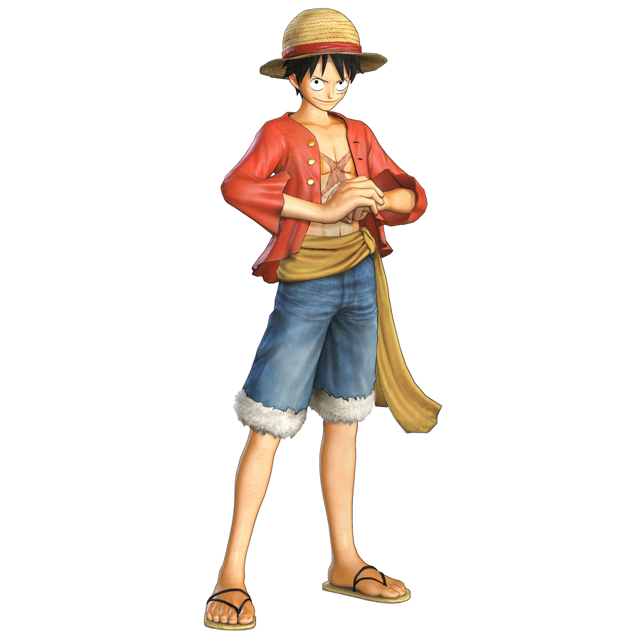

Monkey D. Luffy
Captain of The Straw Hat Pirates
ABOUT
Monkey D. Luffy, also known as "Straw Hat Luffy" and commonly as "Straw Hat", is the main protagonist of the manga and anime, One Piece. He is the founder and captain of the increasingly infamous and powerful Straw Hat Pirates, as well as one of its top fighters. His lifelong dream is to become the Pirate King by finding the legendary treasure left behind by the late Gol D. Roger. He believes that being the Pirate King means having the most freedom in the world.
Age
19
Date of Birth
May 5th
Height
174 cm
Origin
East Blue
Devil Fruit
Gomu Gomu no Mi
Bounty
 1,500,000,000
1,500,000,000Skill & Ability
Conqueror Haki
Armanent Haki
Awakening Devil Fruit
Friendship Spirit
Durability
Strong Vision
Timeline
Before Timeskip
Luffy Appearance
Before Timeskip
Similar to most of his male crewmates, Luffy has the same outfit throughout most of the series (with the exception of Nami and Nico Robin, who frequently change their outfits). Luffy will often wear a different outfit to suit the climate of an island (such as a hooded parka on Drum Island or desert robes in Arabasta) but will switch back to his trademark red vest and blue shorts after the adventures on that island are over. Despite this, he will wear his usual outfit in different colors and has been known to sport other miscellaneous items on his person from time to time like in Thriller Bark and Sabaody Archipelago. According to Eiichiro Oda in 37 Volume SBS, Luffy does not know how to dress stylishly so sometimes he is advised on how to dress by more fashionable team members, Nami, Usopp, Sanji, and Robin.
Drum Island Arc
Before Timeskip
He wore two different parkas, the first being a dark red parka with fur on the cuffs, hood, and hem, and then a checkered, hooded parka with the colors white, orange and bright yellow, which Nami wore in the beginning.
Arabasta Arc
Before Timeskip
He wore desert robes consisting of a dark red robe with three white rings decorated along both sleeves and a light blue wrap over his head.
Skypiea Arc
Before Timeskip
He wore a black wristband around his left wris with a white bangle over it. In 37 Volume SBS, Oda said that two members of his crew lent him accessories: a black wristband by Usopp and a white bracelet by Sanji.
Long Ring Long Land Arc
Before Timeskip
Luffy wore an afro on his head, dark red shorts, and red bandages on his feet, getting an image of a blue flaming skull and crossbones painted on his chest as well, when he was fighting Foxy.
Enies Lobby Arc
Before Timeskip
He wore black shorts with more pockets than his blue shorts, which he noted he could not fit his meat in.
Post-Enies Lobby Arc
Before Timeskip
Luffy wore a white T-shirt with the Galley-La Company emblem on it in red; red liners around the top, shoulders, and collar; and navy blue shorts.
Thriller Bark Arc
Before Timeskip
He wore an orange vest and red shorts. After the battle against Moria in Thriller Bark, Luffy wore a dark decorated, jeweled armband around his left bicep, given to him by Nami. This armband was later revealed to be a map that leads to Captain John's lost treasure, which Buggy sought for some time; Luffy handed the armband over to Buggy in exchange for his services in navigating through Impel Down.
Sabaody Archipelago Arc
Before Timeskip
In the manga, he wore a blue vest and red shorts (which can also be seen on the cover of volume 52). In the anime, he wore the same blue vest, but dark blue shorts.
Amazon Lily Arc
Before Timeskip
Luffy wore a light blue vest with red shorts.
Impel Down Arc
Before Timeskip
Luffy wore his outfit from his stay on Amazon Lily until after his fight with Magellan, at which point he replaced his light blue vest with a bright yellow vest given to him by Inazuma.
After Timeskip
Luffy Apperance
After Timeskip
After those two years, a few things have changed. Luffy wears an open, long-sleeved red cardigan with four buttons (which shows the X-shaped scar covering most of his chest he received by then-Admiral Akainu), with a yellow sash tied around his waist, somewhat reminiscent of Gol D. Roger's outfit. He has grown slightly taller and is shown to be significantly more muscular due to his training. This can be seen in his slightly thicker neck, more pronounced deltoids, and better-defined chest. During his fight with Sanji, Luffy loses one of his top teeth after being struck by a Diable Jambe Joue Shot directly into his face. However, it grew back after he drank a bottle of milk.
Punk Hazard Arc
After Timeskip
Luffy wore a long winter coat with red and white horizontal stripes, along with yellow ear muffs, which he stole from one of Brownbeard's Centaur Patrol Unit.
Dressrosa Arc
After Timeskip
Luffy wore an open, short-sleeved shirt with a sunflower pattern, standard blue shorts, and a yellow sash. He also wore a fake beard. Upon entering the tournament for the Mera Mera no Mi in the Corrida Colosseum, he wore Viking-style armor, complete with a sword and shield until it was stripped from him due to a violation of the weight restriction. Upon revision to meet the weight restriction, he added a cape and wore the same Viking style helmet he wore previously, along with his registration number '0556' and the word "Lucy" written on the back of his shirt, obscured by his cape. When he recovered after his battle against Doflamingo, Luffy wore a red tank top along with his standard shorts in brown (dark grey in the anime).
Whole Cake Island Arc
After Timeskip
During the Whole Cake Island Arc, Luffy wore an open, fancy white cardigan with puffy sleeves along with his standard shorts in red. He also had a decorative scarf wrapped around his straw hat after landing at the Seducing Woods, though he appears to have lost it during his battle with Charlotte Cracker. These clothes were eventually torn to shreds after several battles and he later dons a new outfit to meet with Capone Bege; a red suit jacket with a brown shirt and a pink ascot along with red formal shorts. He also fitted a black fedora to the top of his straw hat.
Wano Country Arc
After Timeskip
Throughout the Wano Country Arc, Luffy wore a red yukata with patchwork mon of a blue rounded sun on a cyan background and a yellow obi. He also had a topknot on top of his hair. He also had the Nidai Kitetsu he borrowed from Tenguyama Hitetsu. Before beginning the assault on Onigashima, Luffy received a set of samurai armor from Hitetsu. When helping Kin'emon and the others against Kaidou's fleet at sea, Luffy wore a long, dark-colored coat over his usual attire. He also swapped his regular sash and pants for a purple and orange-brown one respectively. He also briefly wore a Beasts Pirates disguise (created by Kin'emon) when infiltrating Onigashima.
https://twitter.com/onepiecedaiiys/status/1483130125218689029?s=12
https://www.facebook.com/groups/862581237836144/?ref=share
https://msng.link/o/?topijeramii=ig